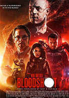
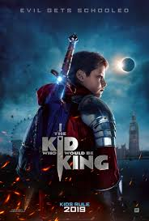
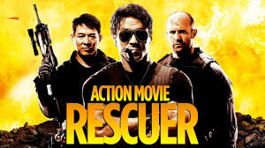

action movies
  best action actors
Arnold Schwarzenegger With an almost unpronounceable surname and a thick Austrian accent, who would have ever believed that a brash, quick talking bodybuilder from a small European village would become one of Hollywood's biggest stars, marry into the prestigious Kennedy family, amass a fortune via shrewd investments and...
Sylvester Stallone This athletically built, dark-haired American actor/screenwriter/director may never be mentioned by old-school film critics in the same breath as, say, Richard Burton or Alec Guinness; however, movie fans worldwide have been flocking to see Stallone's films for over 30 years, making "Sly" one of ...
Bruce Willis Actor | Die Hard Actor and musician Bruce Willis is well known for playing wisecracking or hard-edged characters, often in spectacular action films. Collectively, he has appeared in films that have grossed in excess of $2.5 billion USD, placing him in the top ten stars in terms of box office receipts. Walter Bruce ...